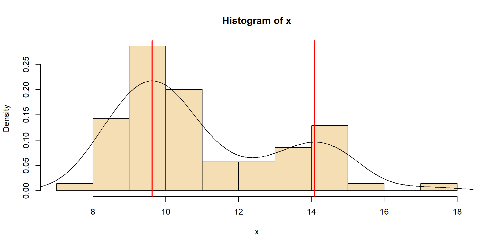

\(\rightarrow\) Zur Erinnerung: Die Berechnung statistischer Parameter wird als Schätzung bezeichnet.
Eigenschaften von statistischen Parametern
Erwartungstreue: die Schätzung konvergiert mit zunehmendem \(n\) gegen den wahren Wert
Effizienz für eine gute Schätzung ist ein relativ kleines \(n\) ausreichend
Robustheit die Schätzung wird durch Ausreißer oder gewisse Verletzungen statistischer Annahmen nur wenig beeinflusst
Je nach Fragestellung gibt es verschiedene Arten von Parametern, insbesondere Maße der Lage (z.B. Mittelwert, Median), der Variation (z. B. Varianz, Standardabweichung) oder der Abhängigkeit (z. B. Korrelation).
Median und getrimmter Mittelwert werden weniger von Ausreißern und Schiefe der Verteilung beeinflusst \(\rightarrow\)robuster
aber etwas weniger effizient
Pseudomedian (Hodges-Lehmann-Schätzer)
Der Pseudomedian (\(\tilde{x}^*\)) ist ein robuster und effizienter Schätzer für den Lageparameter. Er wird als Median aller möglichen Mittelwerte von je zwei Beobachtungen berechnet.
library(Hmisc) # Verwenden der gleichen Stichprobe wie für den Medianset.seed(123)x <-round(runif(7, max =10), 1)# Sortierung für bessere Lesbarkeit des Beispiels (nicht Teil der pMedian-Berechnung)sort(x)
Beachte: Strengenommen wird der Grundgesamtheitsparameter als “Pseudomedian” bezeichnet, der Stichprobenparameter als “Hodges-Lehmann-Schätzer”.
Modus (Modalwert)
häufigster Wert einer Stichprobe
Strenge Definition nur gültig für diskrete (binäre, nominale, ordinale) Skalen
Erweiterung auf kontinuierliche Skalen: Klassenbildung oder Dichteschätzung
Erste Näherung: Mitte der häufigsten Klasse.
Modus: Gewichtungsformel
\[\begin{align}
D &= x_{lo}+\frac{f_k-f_{k-1}}{2f_k-f_{k-1}-f_{k+1}}\cdot w \\
D &= 18 + \frac{29 - 15}{2 \cdot 29 - 15 - 26} \cdot 2 = 19.65
\end{align}\]
\(f\): Klassenhäufigkeit, \(w\): Klassenbreite
\(k\): der Index der häufigsten Klasse, \(x_{lo}\) ihre Untergrenze.
Modus: Dichteschätzung
Etwas rechenintensiver, wobei der Modus das Maximum einer Kernel-Dichte-Schätzung ist.
Der Modus aus der Dichteschätzung ist dann \(D=19.42\).
Multimodale Verteilung

Beispiel: Fischpopulation mit mehreren Altersklassen (Kohorten)
Vergleich der Streuung verschiedener Variablen, unabhängig von ihrer Maßeinheit
Nur für Daten mit Verhältnisskala, d.h. mit einem absoluten Nullpunkt (wie Meter)
nicht für Variablen wie Celsius-Temperatur oder pH-Wert.
Beispiel
Nehmen wir an, wir haben den Abfluss von zwei Flüssen, einer mit \(cv=0.3\), der andere mit \(cv=0.8\). Wir sehen, dass der 2. eine extremere Schwankung aufweist.
Spannweite
Die Spannweite misst die Differenz zwischen Maximum und Minimum einer Stichprobe:
\[
r_x = x_{max}-x_{min}
\]
Nachteil: sehr empfindlich gegenüber Ausreißern.
Interquartilsabstand
IQR oder \(I_{50}\) lässt die kleinsten und größten 25% aus.
Stichprobengröße von mindestens 12 Werten empfohlen
\[
I_{50}=Q_3-Q_1=P_{75}-P_{25}
\]
Geordnete Stichprobe
\(Q_1\), \(Q_3\): 1. und 3. Quartil
\(P_{25}, P_{75}\): 25. und 75. Perzentil
typischerweise in Boxplots verwendet
Für normalverteilte Stichproben, feste Beziehung zwischen \(I_{50}\) und \(s\):